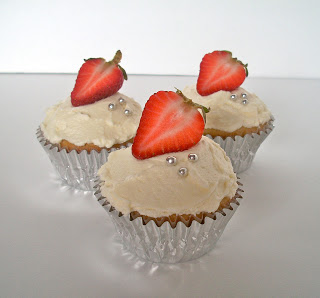

Moscato Cupcakes

Ingredients
- 2 1/2 c All-Purpose Flour
- 1 t Baking Soda
- 3/4 t Salt
- 1 1/4 c Sugar
- 1 c Canola Oil
- 1/3 c Moscato Wine
- 3/4 c Buttermilk
- 2 Large Eggs
- 1 t White Vinegar
- Optional: Berries or sprinkles for garnish
Directions
- Heat oven to 350°F.
- In a large bowl, combine the flour, baking soda, salt, and sugar, and whisk together.
- In a separate bowl, combine the oil, Moscato, buttermilk, eggs, and vinegar.
- Slowly pour the wet ingredients into dry and mix until it is just blended.
- Bake in paper cupcake cups for 15-17 minutes.
Yield: approximately 12 to 18 cupcakes
For more fun cupcakes try baking Margarita Cupcakes